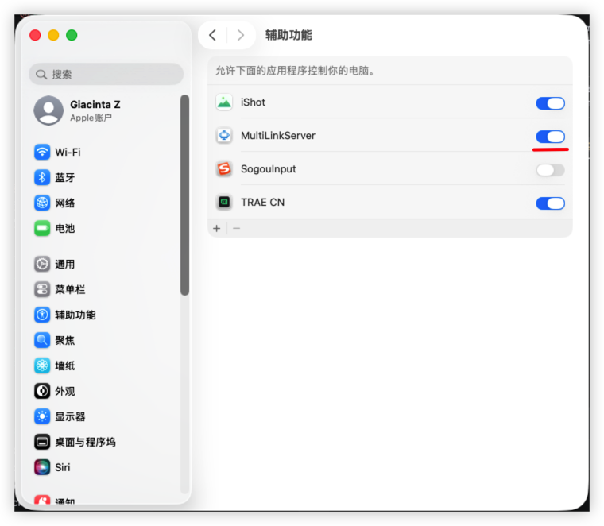

MultiLinkServer runs on your PC. Open the app on your phone — they connect automatically over Wi-Fi. No cables, no Bluetooth pairing.
Install the client on your computer first. The phone app will connect to it over your local network.
Follow these steps to get your phone controlling your computer.
Download and install MultiLinkServer on your computer. Launch it — you will see the server IP and port in the main window and a status icon in the system tray.
Your phone and computer must be on the same local network (Wi-Fi). The app cannot connect over mobile data or across different networks.
Open the phone app. If the computer is not found automatically, tap "Add Device" and enter the IP address and port shown in the client window.
Once connected, the keyboard and trackpad are live. You can switch between keyboard and touchpad layouts from the settings icon in the app.
On macOS, apps must be explicitly granted Accessibility permission before they can inject keyboard and mouse events. This is a one-time setup.
Open the DMG file and drag MultiLinkServer.app into the Applications folder. Do not run it directly from the DMG — macOS will quarantine the app at a random path, causing permission issues.
Go to System Settings (or System Preferences on older macOS) → Privacy & Security → Accessibility.

If MultiLinkServer already appears in the list, first remove it by clicking the − button. Then click +, navigate to your Applications folder, and select MultiLinkServer.app. Toggle the switch to ON.
Quit MultiLinkServer from the system tray (right-click → Quit) and reopen it from Applications. The client will now be able to inject keyboard and mouse events.
xattr -cr /Applications/MultiLinkServer.app — this removes the quarantine flag.